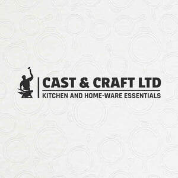

Trade Mark Journal No.2025/026 27 June 2025
UK00004209262 26 May 2025 (6,8,21,24,35,37,42)

- Class 6
- Cast iron.
- Class 8
- Stainless steel table knives; Stainless steel table spoons; Cutlery; Silverware [cutlery, forks and spoons]; Forks [cutlery]; Knives being tableware; Canteens of cutlery; Table cutlery [knives, forks and spoons]; Tableware [knives, forks and spoons]; Biodegradable cutlery; Spoons being tableware; Hand-operated cutlery; Disposable tableware [cutlery] made of plastics; Forks being tableware; Spreaders [cutlery]; Spreaders being cutlery; Cutlery, kitchen knives, and cutting implements for kitchen use; Table knives, forks and spoons of plastic; Boxes for cutlery [fitted]; Silver plate [knives, forks and spoons]; Knives, forks and spoons; Canteens of cutlery made of precious metal; Plastic spoons, table forks and table knives; Boxes adapted for cutlery; Kitchen knives; Cutlery of precious metal for cutting; Cutlery for use by children; Cutlery of precious metals; Table knives, forks and spoons for babies; Kitchen knives (Non-electric -); Baby spoons, table forks and table knives; Cutlery for use by babies; Knives; Ceramic knives; Table knives; Thin-bladed kitchen knives; Biodegradable knives; Household knives; Japanese chopping kitchen knives; Disposable knives; Chef knives; Sterling silver table knives; Forks and spoons; Folding knives; Spoons; Disposable spoons; Fish slicing kitchen knives; Stainless steel table forks; Razor knives; Vegetable knives; Fruit knives; Kitchen mandolines.
- Class 21
- Cookware; Cookware [pots and pans]; Skillets; Grill pans made of precious stone; Tableware, cookware and containers; Cutlery trays; Bone china tableware [other than cutlery]; Tableware, other than knives, forks and spoons; Cookware and tableware, except forks, knives and spoons; Tableware, except forks, knives and spoons; Tableware; Cutlery rests; Cookware, except forks, knives and spoons; Kitchen utensils; Crockery; Oven-to-table tableware; Tableware of porcelain; Moulds [kitchen utensils]; Aluminium moulds [kitchen utensils]; Mixing spoons [kitchen utensils]; Dishes [household utensils]; Trivets [table utensils]; Dishware; Graters [household utensils]; Kitchen utensils of silicon; Tenderizers [kitchen utensils]; Ceramic tableware; Household or kitchen utensils; Molds [kitchen utensils]; Household utensils; Basting spoons [cooking utensils]; Sieves [household utensils]; Dinnerware of porcelain; Dinnerware; Graters [non-electric household utensils]; Glass tableware; Cooking utensils; Coasters (tableware); Egg separators [kitchen utensils]; Picnic crockery; Plastic plates [dishes]; Cosmetic utensils; Turners (kitchen utensil); Cooking utensils, non-electric; Cosmetic and toilet utensils; Sifters [household utensils]; Griddles [cooking utensils]; Kitchen utensils, not of precious metal; Baking utensils; Non-electric griddles [cooking utensils]; Griddles [non-electric cooking utensils]; Aluminium cookware; Crockery made of porcelain; Tea services [tableware]; Corkscrews with knives; Tortilla presses, non-electric [kitchen utensils]; Household utensils for cleaning, brushes and brush-making materials; Grills [cooking utensils]; Coffee services [tableware]; Wire baskets [cooking utensils]; Presses (Garlic -) [kitchen utensils]; Chinaware; Compostable plates; Earthenware saucepans; Glassware; Scoops [tableware]; Stainless steel wire balls for cleaning; Steel wool; Steel wool [scouring pads of steel]; Aluminium bakeware.
- Class 24
- Textiles for interior decorating; Textiles for furnishings; Kitchen and table linens; Kitchen towels [textile]; Kitchen towels of textile; Kitchen towels.
- Class 35
- Wholesale services in relation to cookware.
- Class 37
- Sharpening of kitchen knives.
- Class 42
- Interior decorating; Decor (Design of interior -); Interior decor design.
Cast and Craft ltd